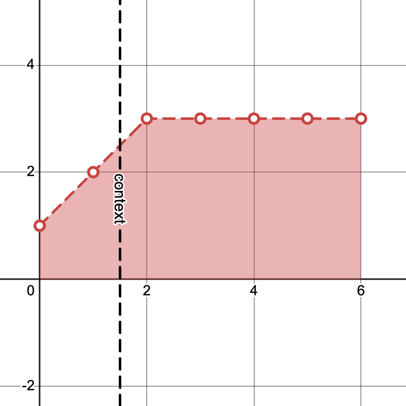
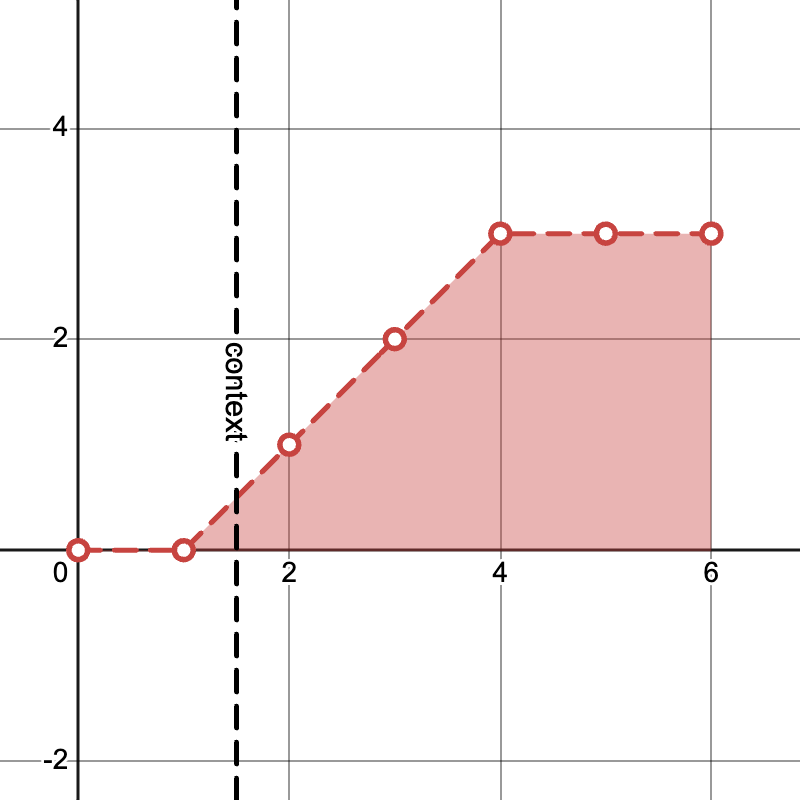
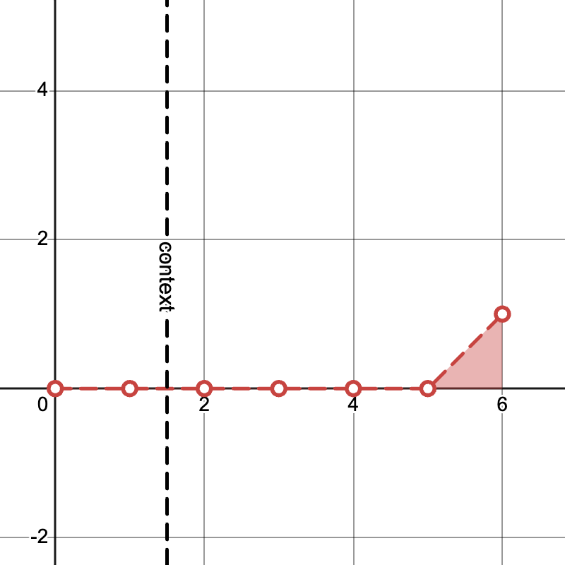

[2024-11-09] KV Caching with Diffusion Forcing
Diffusion forcing is an approach to generative modeling of sequential data by parameterizing a diffusion model with an autoregressive architecture and training with independent noise levels sampled per timestep. The GitHub repository at the time of writing supports a variant of diffusion forcing with temporal attention, but it seems to use an inefficient implementation limiting its ability to be used to generate efficiently while conditioning on longer contexts. KV caching with diffusion forcing is slightly non-trivial due to how the noise levels can change during the generation process. Here, we describe an approach to KV caching for the "pyramid" noise schedule.
Background
With diffusion on sequential data, we have two notions of "time": the timestep of the data itself (e.g. video frame index, MDP timestep) which we will index with \(t\), and the timestep of the diffusion forward process, which will generally be referred to as the "noise level" instead and be indexed with \(k\).
The diffusion forcing paper describes a "pyramid" noise scheduling matrix which, at each iteration of inference, has no noise up to some timestep \(t\), then monotonically increasing noise levels until the maximum noise level \(K\) is reached at timestep \(t + K,\) and then all remaining timesteps have the maximum noise level \(K.\) Note that \(k\) an \(K\) refer to a specific index and the total number of indices in a discretization of the variance schedule rather than to the variance itself. This is the noise scheduling matrix we consider for the remainder of the post---it is particularly amenable to caching, since the noise level at any given timestep depends only on its relative position to the first timestep with positive noise.
Open-Loop Generation
For applications such as video generation, we receive some fixed context and are tasked with generating some arbitrary length continutation of the video, without receiving any new observations over time. Note that if \(T\) is the number of new frames we wish to generate, this requires \(K + T - 1\) evaluations of the diffusion model, since there are \(K + T - 1\) iterations of unique sequences of noise levels. The first iteration has noise level \(K\) for all \(T\) frames, the \(K\)th iteration starts at the lowest noise level on the first frame, and the \(K + T - 1\)th iteration starts at the lowest noise level on the last frame.
Example "pyramid" noise levels with \(K = 3, T = 4\) and generating from \(S=2\) frames of context:
Iteration \(1\)
Iteration \(K\)
Iteration \(K + T - 1\)
Note that a cached KV for any particular prefix [:t] can only be re-used if all noise levels in that prefix are identical on the next iteration. The only timesteps which maintain the same noise level on the next iteration are the ones with noise level \(0\) or \(K,\) so the usefulness of KV caching is limited to only those inputs. Note that the model predictions for tokens which stay at noise level \(K\) have no impact on the generation process, so we can exclude the corresponding suffix entirely.
If there are \(S\) frames of context, \(K\) distinct noise levels, and we are generating \(T\) frames, then:
- The first iteration requires predictions for the first \(S\) timesteps, and we can caches the first \(\max(0, S - K + 1)\) resulting keys and values corresponding to the completely un-noised input timesteps.
- The second iteration requires predictions for the first \(S + 1\) timesteps, but we can re-use the cached values from the first iteration if available, so the number of new tokens we process is at most \(K\).
- and so on, each iteration after the first only processing at most \(K\) new tokens.
Iteration \(i - 1\)
Compute outputs for \(t = 0, \ldots, 4\)
Save KV for \(t = 0, 1\)
Iteration \(i\)
Re-use cached KV for \(t = 0, 1\)
Compute outputs for \(t = 0, \ldots, 5\)
With \(O(K + T)\) total iterations, where each iteration involves up to \(S + T\) timesteps, full causal self-attention without caching incurs a time complexity of \(O((K + T)(S + T)^2)\). With caching, we can bring this down to \(O((K + T) \min(K, S + T) (S + T))\), which can result in a speedup if the context or generation length are large relative to the number of noise levels.
Online Planning
When using a world model for planning, we often have a situation where we generate a plan with some horizon \(T\) number of frames into the future, take an action according to that plan, and repeat.
Here, we have an additional opportunity for caching. Let \(s\) denote the current context length, i.e. the number of real environment steps taken so far. (Yes, we now have three notions of "time": diffusion process noise level \(k\), plan timestep \(t\), and environment step \(s\).).
During the generation process for the current environment step, any given timestep of the plan only takes on each noise value from \(1\) through \(K-1\) most once, so the KV for these timesteps weren't useful for open-loop generation. However, in the online planning scenario, during environment step \(s + 1\), each plan timestep \(t\) with noise level in \(1, ..., K - 1\) takes on the same noise level at planning iteration \(i\) as it did during environment step \(s\) on planning iteration \(i + 1\). One can imagine caching timesteps corresponding to those noise levels too, and not just the timesteps with noise 0.
This doesn't result in an asymptotic improvement, though, since typically the "majority" of noise levels of preceding timesteps are noise level 0. Up to \(K\) new tokens may need to be re-computed anyway, since the new observation from the environment step invalidates the previous cache for any timesteps \(t \ge s.\)
Practically speaking, the biggest efficiency gain here would come from keeping just one set of keys and values from the current plan, since this lets you avoid paying the constant up-front cost of the first iteration of open-loop generation on the next environment step.